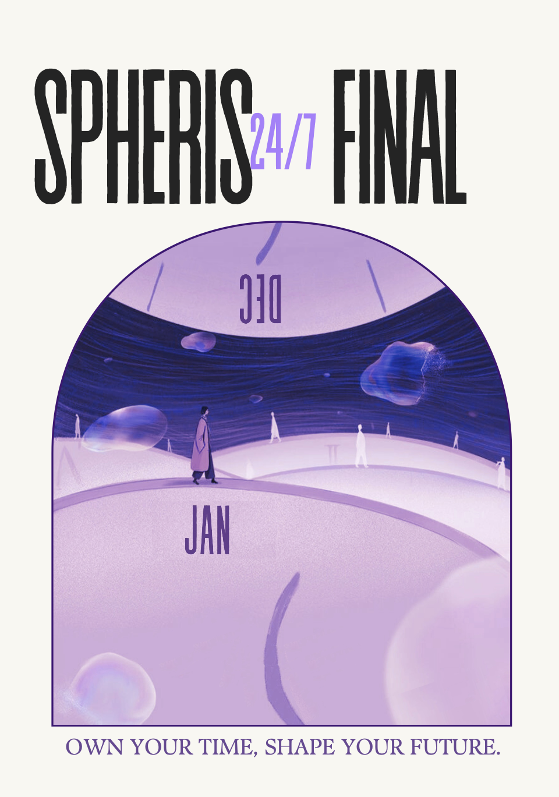
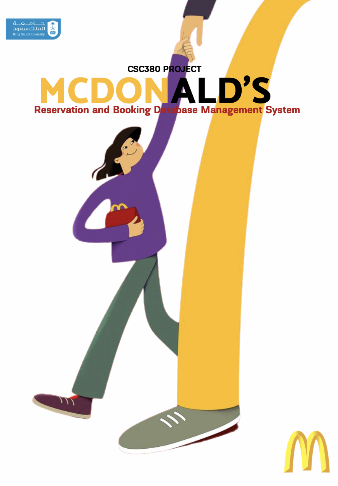

Spheris 24/7 Productivity & Task Management App

Designed and developed a mobile application using AI-based task prioritization, Pomodoro technique, gamification, and contributed to UI/UX design.
View Project
Designed and developed a mobile application using AI-based task prioritization, Pomodoro technique, gamification, and contributed to UI/UX design.
View Project
Developed a database-driven reservation system using ER modeling, SQL, and a Java-based GUI for customers and managers.
View Project